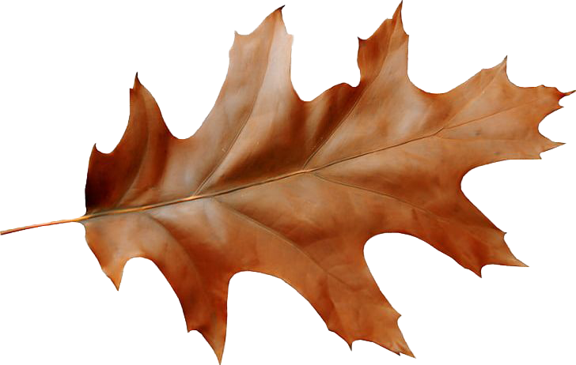

Return


The King calls upon you.
Your Next Task
Find a tree nearby and pause beside it.
Look closely at its form, notice how it moves or how it rests. Observe for 3 minutes.
Place your hand upon it. Note one detail you might have missed before.
Remember this moment. You will record it when you return.
